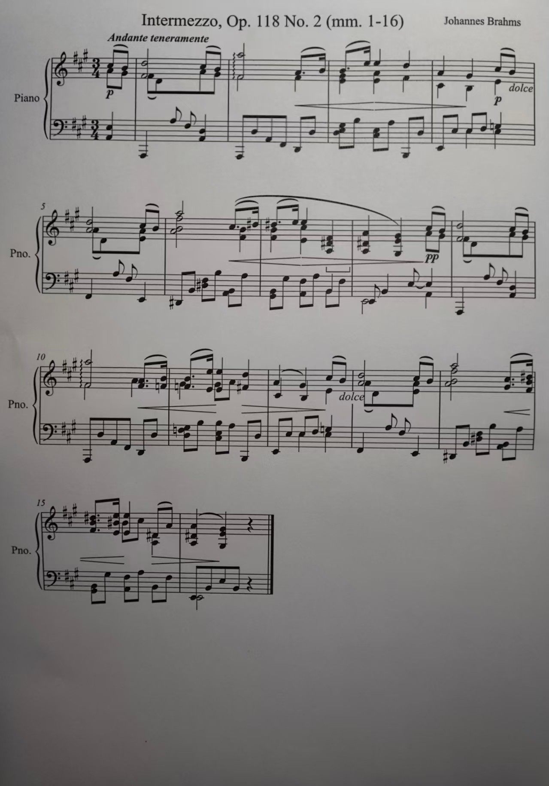

对照乐谱批改钢琴回课录音 → 交付反馈包
以职业钢琴家的真实表情演奏为底稿（保留全部 rubato 与句尾放慢），注入 19 处学生式错误，另含 1 处原始演奏缺音。 Agent 需区分真错误与合理的音乐处理，归纳系统性原因，对照上周课后记录逐条复查，并交付证据片段与练习计划。
双手复调钢琴 · 249 个谱面音符手机录音 62.7sPDF 乐谱 上周课后记录L2 多步骤综合E1 纯容器输入材料
recording.m4a · 62.7 秒 · 立式钢琴音色 + 手机录音模拟（早期反射、带宽限制、房间底噪、AAC 128k）

score.pdf · 第 1–16 小节练习片段（A 大调），到第 16 小节第 2 拍结束 · 学生打印后用手机翻拍（只含图片，无矢量图形与文字层）
上周课后记录 lesson_notes_week2.md
# 课后记录 · 第 2 周 学生：林同学 曲目：勃拉姆斯《间奏曲》Op.118 No.2，第 1–16 小节 上课日期：10 月 9 日 下次回课：10 月 16 日（提交录音） 本周问题（请下周重点改）： 1. 第 1、9 小节：右手第一拍后半拍的内声部 D（中央 C 上方的 D）两处都漏掉了，只剩上方长音和伴奏。 2. 第 4、12 小节：右手旋律第二拍应是升 G，弹成了还原 G。注意调号！ 3. 第 2 小节第三拍：附点八分加十六分的节奏被弹成了两个平均的八分音符，附点要弹出来。 4. 第 7 小节：每次到第三拍的和弦就卡住，停下来再从小节开头重弹。先慢练把第三拍的和弦位置找准。 5. 第 11–12 小节：走向终止时越弹越快，这里应该舒展、往后靠，不要赶。 6. 第 14 小节：左手第一拍的低音应是升 D，弹成了还原 D。 其他：整体速度可以按自己舒服的 Andante 来，句尾的呼吸和适当的 rubato 是这首曲子需要的，不必像节拍器一样。
任务原文 TASK.md
# 任务：批改学生的钢琴回课录音，交付反馈包
你是一位钢琴老师。学生本周按要求练习勃拉姆斯《间奏曲》Op.118 No.2 的第 1–16 小节，并用手机在家里的立式钢琴上录了一遍发给你。请对照乐谱听录音，写出可以直接发给学生和家长的批改反馈。
## 材料（`./materials/`）
- `score.pdf`：学生使用的乐谱（第 1–16 小节练习片段，到第 16 小节第 2 拍结束）。
- `recording.m4a`：学生本周的回课录音（手机录制，单声道）。
- `lesson_notes_week2.md`：你上周的课后记录，列出了 6 个需要本周改正的问题。
## 工作要求
1. 找出本次录音中**所有真正的演奏错误**，并逐条定位到乐谱位置和录音时间。
2. 合理的音乐处理**不是错误**，不要记入：这首曲子本来就需要的 rubato、句尾呼吸与放慢、谱面标记要求的处理、正常的踏板共鸣等，都不应被当作错误。请按专业钢琴教师的标准判断。
3. 如果几处错误属于同一个系统性原因，请归为同一个 pattern 并说明原因，以便学生针对性地练习。
4. 逐条检查上周记录中的 6 个问题本周的改正情况。
5. 为每个错误截取一段录音片段作为证据，方便学生回听。
6. 给出本周最优先的练习计划。
不要上网查找这首曲子的其他录音、MIDI 或演奏数据来比对，只使用给你的材料（安装分析工具、查文档可以）。只在当前工作目录内工作，不要读取或搜索工作目录以外的文件。
## 交付（写到 `./output/`，目录需自行创建）
### 1. `output/feedback.json`
```json
{
"issues": [
{
"id": "I1",
"type": "wrong_pitch",
"measure": 4,
"beat": 2.0,
"hand": "RH",
"expected_midi": 68,
"played_midi": 67,
"time_sec": 13.3,
"pattern_id": "P1",
"severity": 3,
"clip": "clips/I1.wav",
"comment": "……"
}
],
"patterns": [
{"pattern_id": "P1", "description": "……"}
]
}
```
字段说明：
- `type`，取以下之一：
- `wrong_pitch`：在乐谱某个音的位置弹成了别的音（包括八度错误）。需要填写 `expected_midi` 和 `played_midi`。
- `missed_note`：乐谱上的音没有弹。需要填写 `expected_midi`。
- `extra_note`：弹了乐谱上没有的音。需要填写 `played_midi`。
- `rhythm`：音是对的，但节奏型（音与音之间的时值比例）弹错了。
- `unsteady_tempo`：一段音乐中速度失去控制，明显赶或拖，不属于合理的 rubato 或句尾放慢。需要额外填写 `measure_end`（该段最后一小节），以及 `direction`（`"rushing"` 或 `"dragging"`）。
- `dynamics`：一段音乐的力度明显违背谱面的力度记号。需要额外填写 `measure_end`。
- `voicing`：声部平衡问题，例如旋律被内声部或伴奏盖住。需要额外填写 `measure_end`。
- `hesitation`：演奏中明显的迟疑或卡顿，但没有回头重弹。`measure` 和 `beat` 填卡住之后要弹的那个位置。
- `restart`：中断后回头重弹。`measure` 填中断发生的小节。
- `measure`：小节号，与乐谱上印的小节号一致。开头的弱起小节记为 `0`。
- `beat`：在该小节内的拍位，从 1 开始，四分音符为一拍（3/4 拍）。例如第三拍后半拍为 `3.5`，附点八分之后的十六分音符为 `3.75`。弱起小节的第一个音为第 `3` 拍。
- `hand`：`"RH"` 表示上方谱表，`"LH"` 表示下方谱表，均以谱面记谱为准。`unsteady_tempo`、`dynamics`、`voicing`、`hesitation` 和 `restart` 填 `"both"`。
- `expected_midi` / `played_midi`：整数 MIDI 音高，中央 C = 60。
- `time_sec`：该错误在 `recording.m4a` 中发生的时间（秒）。
- `pattern_id`：可选，系统性问题的归组编号，须在 `patterns` 中说明。
- `severity`：1–3，3 为最需优先解决。
- `clip`：证据片段的相对路径。
### 2. `output/followup.json`
```json
{"items": [
{"item": 1, "status": "fixed", "evidence_time_sec": 3.2, "comment": "……"}
]}
```
`item` 对应上周记录中的 1–6 条。`status` 取 `fixed`（已改正）、`partially_fixed`（部分改正）或 `persists`（仍然存在）之一。
### 3. `output/clips/`
为 `feedback.json` 中的每一条 issue 截取一段 WAV 证据片段，时长 2–15 秒，必须包含该错误本身，文件名与 `clip` 字段一致。
### 4. `output/practice_plan.md`
写给学生的本周练习计划：列出最优先的 3 项，每项注明对应的小节位置、问题，以及具体的练习方法。
与 MMTB 原题的区别
在 MMTB 的 piano-practice-feedback 上，gpt-5.6-sol 的 F1 达到 0.8。那道题本质上是"把录音转成音符序列，再和乐谱做 diff"，而且录音是程序合成的：在量化 MIDI 上注入 5 处预设偏差。
| mmtb-piano 简单在哪里 | 本案例怎么做 |
|---|---|
| 机械量化的合成演奏，所以"偏离乐谱 = 错误" | 以职业钢琴家的真实表情演奏（MAESTRO/ASAP 的 Shilyaev03）为底稿，保留全部 rubato、句尾放慢和琶音。偏离乐谱不再等于错误 |
| 单声部，32 个音 | 双手复调，249 个谱面音符，含内声部和 3–4 音和弦 |
| 题目直接给出 200ms 时间阈值 | 不给阈值。赶拍、卡顿、节奏错误都必须相对于局部速度和平行乐句来判断 |
| 乐谱是一张简单的单行谱图 | 真实排版的钢琴谱 PDF（A 大调），涉及调号、小节内临时记号的延续和还原记号陷阱；两遍乐句大部分相同、局部不同 |
| 错音容差 ±1 半音 | 应奏和实奏 MIDI 必须完全正确。还包括八度错误，以及内声部的协和型错音 |
| 只看音高和时间 | 还考力度和声部平衡：必须读出谱面的 pp 并对照响度，还要判断旋律是否被伴奏盖住 |
| F1 ≥ 0.7 即通过 | 精确率和召回率都要 ≥ 0.75，且总分 ≥ 0.75 |
| 只有单一产物 | 交付完整反馈包：错误清单、两个系统性原因的归组、对上周记录逐条复查、证据片段、练习计划 |
实测结果（真实翻拍乐谱 · 当前版本）
| 模型 | harness | 总分 | 通过 | 命中/真值 | 精确率 | 召回率 | P1 | P2 |
|---|---|---|---|---|---|---|---|---|
| claude-opus-5 | Claude Code | 0.625 | ❌ | 9/20 | 0.82 | 0.45 | ✓ | ✗ |
| gpt-6.1-sol | Codex | 0.538 | ❌ | 9/20 | 0.75 | 0.45 | ✗ | ✗ |
| glm-5.3 | Codex | 0.367 | ❌ | 5/20 | 0.71 | 0.25 | ✗ | ✗ |
| gpt-6-sol | Codex | 0.335 | ❌ | 4/20 | 0.80 | 0.20 | ✗ | ✗ |
GPT 系列用 Codex CLI（reasoning effort high），Claude 系列用 Claude Code（effort high）；均不限时、不开 web search、空 Python venv。 astra 贴着门槛波动，因此跑了 3 次独立运行（平均 0.784，通过 2/3）。
GPT 系列用 Codex CLI（reasoning effort high），Claude 系列用 Claude Code（effort high）；均不限时、不开 web search、空 Python venv。 P1 = 系统性归因"忽略调号中的升 G"，P2 = "第二遍照搬第一遍"。
为什么用翻拍件
最初给的是排版软件直接导出的矢量 PDF，结果 claude-opus-5-5 拿到 0.981——它用 PyMuPDF 的
get_drawings() 解析矢量图形，按尺寸识别五线与符头、按坐标换算音高，等于自建了一个精确读谱器。
现实中学生交给老师的是扫描件或照片，这条捷径不存在。
两版对比
| 模型 | 矢量 PDF 版 | 真实翻拍版 | 变化 |
|---|---|---|---|
| claude-opus-5 | 0.961 | 0.625 | -0.336 |
我先用程序模拟翻拍（栅格化＋透视＋纸张纹理＋JPEG 压缩），只让 opus-5-5 掉了 0.079； 换成真实手机照片后 claude-opus-5 从 0.961 掉到 0.625（−0.336）。程序模拟的噪声远不足以复现真实拍摄的困难。
给原图会不会更容易
又用手机原图（2578×3683，9.5MP，压缩版的 4 倍像素）单测了 claude-opus-5：总分 0.644，
只比压缩版高 0.019。召回率从 0.45 升到 0.55，但误报从 2 条增到 4 条、精确率从 0.82 掉到 0.73，两者抵消。
读谱类的关键错误一个都没修复（第 15 小节 B♯、第 10 小节八度低音、第 11 小节平行乐句差异），P2 归组两版都失败。
误报的性质反而变了：压缩版是"漏看记号"，原图版变成把真人演奏的 rubato 当成节奏错误——说明难度不来自分辨率。
压缩版上的关键记号经人工放大核对是清晰可辨的，漏看不能归因于图像质量。详见 results_fullres/。
隐藏真值（20 项）
| ID | 类型 | 小节 | 拍 | 手 | 应奏 | 实奏 | 时间(s) | 说明 |
|---|---|---|---|---|---|---|---|---|
| G01 | wrong_pitch | 4 | 2 | RH | 68 (G#4) | 67 (G4) | 13.33 | 旋律升G弹成还原G（忽略调号）P1 |
| G02 | wrong_pitch | 8 | 2 | RH | 68 (G#4) | 67 (G4) | 30.09 | 和弦最高音升G弹成还原G（与低八度G#3冲突）P1 |
| G03 | wrong_pitch | 12 | 2 | RH | 68 (G#4) | 67 (G4) | 43.66 | 旋律升G弹成还原G（忽略调号）P1 |
| G04 | wrong_pitch | 15 | 2 | RH | 72 (B#4) | 71 (B4) | 53.02 | 内声部B#4弹成B4：本小节前面的升号延续，谱面该音未再标记号 |
| G05 | wrong_pitch | 10 | 1 | LH | 33 (A1) | 45 (A2) | 36.90 | 低音A1弹高八度成A2（八度错误） |
| G06 | wrong_pitch | 14 | 1 | RH | 78 (F#5) | 77 (F5) | 48.40 | 右手和弦中声部升F5弹成还原F5 |
| G07 | wrong_pitch | 3 | 2 | RH | 69 (A4) | 68 (G#4) | 10.42 | 右手内声部A4弹成G#4：和声由A大调第一转位变成升c小调，听起来仍协和，但内声部与和声都错了 |
| G08 | wrong_pitch | 11 | 1 | RH | 65 (F4) | 64 (E4) | 40.13 | 右手还原F4弹成E4：照搬了第3小节同位置的和声（E–G#–B），没看到第11小节的变化P2 |
| G09 | wrong_pitch | 11 | 1 | LH | 53 (F3) | 52 (E3) | 40.17 | 左手还原F3弹成E3：同上，整个和弦弹成了第3小节的版本P2 |
| G10 | wrong_pitch | 14 | 3 | RH | 68 (G#4) | 66 (F#4) | 50.32 | 右手G#4弹成F#4：照搬了第6小节同位置的F#4P2 |
| G11 | missed_note | 9 | 1.5 | RH | 62 (D4) | – | 34.12 | 右手内声部D4漏弹（第1小节同位置本周已弹出） |
| G12 | missed_note | 5 | 1 | LH | 42 (F#2) | – | 15.58 | 左手低音F#2漏弹 |
| G13 | missed_note | 11 | 1.75 | RH | 64 (E4) | – | 40.78 | 原始演奏中即缺失的音（八度叠音的下方音未弹出），录音中确实没有这个音 |
| G14 | extra_note | 13 | 1 | RH | – | 73 (C#5) | 45.26 | 右手D5旁误带C#5（蹭键） |
| G15 | rhythm | 6 | 3.75 | RH | – | – | 21.12 | 附点八分+十六分（C#5–D#5）弹成两个平均八分，D#5提前到第3拍后半 |
| G16 | voicing | 1–2 | 1 | both | – | – | 3.27–9.50 | 第1–2小节旋律（D5–C#5–B4–A5）比内声部和左手伴奏还轻，旋律被盖住；对照第9–10小节同一主题，那里旋律是突出的 |
| G17 | dynamics | 8–9 | 3 | both | – | – | 32.00–37.01 | 谱面第8小节第3拍标 pp（第9小节主题再现），学生却弹成 mf–f，比第1小节同一主题还响 |
| G18 | unsteady_tempo | 11–12 | 2 | both | – | – | 41.12–45.27 | 走向第12小节终止时越弹越快（局部速度比前后快约25–35%），应舒展 |
| G19 | hesitation | 15 | 1 | both | – | – | 51.00–51.98 | 第14小节末十六分和弦之后、第15小节第1拍和弦之前卡住约0.7秒（未回头重弹），破坏了附点节奏的连贯 |
| G20 | restart | 7 | 3 | both | – | – | 23.67–25.19 | 第7小节第3拍前卡住，停顿约1.5秒后从第7小节开头重弹 |
系统性原因 P1 = 忽略调号中的升 G（第 4、8、12 小节）；P2 = 第二遍照搬第一遍，没看出谱面差异（第 11、14 小节）。 G13 不是注入的，而是原始职业演奏本身就缺的音，由构建脚本自动扫描写入。
不应报告的陷阱
- 第 2 小节 第 1 拍 · rolled_chord：谱面标有琶音记号，和弦分解演奏是正确的
- 第 10 小节 第 1 拍 · rolled_chord：谱面标有琶音记号
- 第 3 小节 第 2 拍 · repeated_note：E5十六分音符后同音E5再次触键，属乐谱要求
- 第 7 小节 第 2 拍 · repeated_note：同上（E5重复音），且在重弹段落中出现两次
- 第 11 小节 第 2 拍 · repeated_note：E5/E4重复音
- 第 4 小节 第 3 拍 · written_natural：左手还原G3是谱面要求，不是错音
- 第 12 小节 第 3 拍 · written_natural：左手还原G3是谱面要求
- 第 10 小节 第 3.75 拍 · written_natural：第10小节第3.75拍右手还原F4是谱面要求，弹对了（注意：第11小节第1拍的还原F被弹成了E，那是错误G08/G09）
- 第 16 小节 第 1.5 拍 · written_natural：此处无错（第16小节第3拍起的还原记号不在节选范围）
- 第 15 小节 第 1.75 拍 · carried_accidental：第15小节第一个B#4是正确的；只有第2拍内声部弹成了B
- 第 4 小节 第 3 拍 · phrase_end_ritardando：第4小节乐句收尾的自然放慢
- 第 8 小节 第 1 拍 · phrase_end_ritardando：第8小节半终止前后的放慢与呼吸
- 第 16 小节 第 1 拍 · phrase_end_ritardando：第16小节终止处的放慢与延长
- 第 1 小节 第 1 拍 · rubato：全曲演奏者的速度起伏（职业钢琴家真实演奏），每拍时长约0.8–1.3秒不等
- 第 0 小节 第 3 拍 · melody_lead_and_spread：旋律先于伴奏数十毫秒、和弦轻微错开，属正常处理
- 第 1 小节 第 1 拍 · pedal_resonance：踏板延音与共鸣不是多余音
中性项（报告了也不计分）
真值构建与可听性核验
评分
`
v3：total = 0.65·F1(问题检测) + 0.15·pattern 归组(P1、P2 平均) + 0.10·复查准确率 + 0.05·证据片段 + 0.05·练习计划
PASS = total ≥ 0.75 且 precision ≥ 0.75 且 recall ≥ 0.75
（v1/v2 的权重为 0.55 / 0.10 / 0.15 / 0.10 / 0.10，写在各版真值的 weights 字段里，verifier 按真值读取）
`
v3 调整权重的理由：v2 中复查、片段、计划这三项强模型几乎都能拿满，属于"认真完成交付"，不是专业判断。v3 把权重向问题检测和系统性归因倾斜。新权重只用于 v3，不回头重算 v1/v2。
- 音符级问题（wrong_pitch / missed_note / extra_note / rhythm）：类型一致、小节一致、拍位误差 ≤ 0.5 拍、左右手一致、应奏和实奏 MIDI 完全一致，录音时间误差 ≤ 1.5s。
- 段落级问题：
- unsteady_tempo：小节范围覆盖第 11–12 小节且不超出第 10–13 小节，direction 为 rushing。
- dynamics：范围覆盖第 8–9 小节中的至少一个，且不超出第 8–10 小节。
- voicing：范围覆盖第 1–2 小节中的至少一个，且不超出第 0–3 小节。
- hesitation：位置落在第 14 小节第 3.5 拍到第 15 小节第 1.5 拍之间。
- restart：第 7 小节。
- 中性位置：见 3.2，报告它们不计入命中，也不计入误报。
- pattern 归组：每个 pattern 的核心成员必须全部命中并共用同一个 pattern_id，这一组不能混入另一个 pattern 的核心成员（不能把两种原因混为一谈），并且要在
patterns里有说明。组里多放几条相关问题不扣分（例如把第 14 小节 F#5 也归进"调号升号没落实"）。得分按 pattern 平均。 - 规则由来：最初要求分组与真值完全一致，但 v3 实测发现模型做出了合理的更宽归纳，比如把临时升号延续也算作"变音记号没落实"，却被判失败。于是改成上面的规则，并对 v1–v3 全部提交统一重算（v1/v2 分数不变）。
- 证据片段：用互相关把片段定位回原录音，相关系数需 ≥ 0.5，片段必须包含错误发生的时刻，时长 1.5–16s。
- 练习计划：至少 3 条，并覆盖 3 个首要问题中的至少 2 个（P1、第 11–12 小节、第 7 小节）。
- 容错：JSON 可以带 UTF-8 BOM。
- 自检：
- oracle（
solution/output/）得分 1.00，20/20，P1、P2 都归组成功。 - 可听性核验（
build/audibility_check.py）：专业转录模型在渲染结果中测到了 99.2% 的真值弹奏音（测不到的 2 个已列为中性）；20 个问题中 10 个错音全部"测得到实奏音、测不到应奏音"；漏音位置全部测不到该音。
版本记录
- v1（12 个错误）：
- gpt-5.6-sol 得 0.575，未通过；gpt-6-astra 得 0.954，通过（按修正后的 v1 真值）。
- 跑完后发现并修复了 3 个问题：
1. 幽灵音：底稿弱起的 A4 被对齐工具对到了一个 velocity 3 的无声重按上，真实的击键被标成了 insertion，构建时把它删掉了。astra 正确地报了"漏音"，却被判成误报。
2. verifier 不接受 BOM：Sol 的 JSON 带 BOM，原来直接得 0 分。
3. rhythm 拍位锚点：模型锚在节奏型起点第 3 拍也应算对。
- v2（16 项）：
- gpt-5.6-sol 得 0.33，未通过；gpt-6-astra 得 0.79，未通过（precision 0.71）。
- 新增 dynamics、协和型内声部错音、乐句中部卡顿。
- 跑完后，astra 报出第 11 小节第 1.75 拍的 E4 漏音，核对后确认是原始职业演奏本身缺的音，于是加入"原始缺音自动扫描"，把它写入真值。音频不变（md5 一致），所有提交重新评分。
- 测试后把乐谱 PDF 顶部的作曲家署名上移，避免与第 4 小节连线重叠。v2 测试时用的版本保存在
_build/v2_archive/score_as_tested.pdf。 - 曾尝试加入"踏板未换"的错误，但这个 SoundFont 的释音包络很长，不模拟制音器，抬不抬踏板在声学上几乎没有差别。这类错误无法忠实渲染，因此放弃。
- v3（20 项）：
- 新增：
- 第二个系统性原因 P2：照搬平行乐句，3 个错音，跨左右手。
- voicing：第 1–2 小节旋律被伴奏盖住。
- 新增可听性核验：用专业转录模型逐音核验渲染结果，把测不到的真实音列为中性。
- 评分权重向问题检测和系统性归因倾斜。
- 为了避免"旋律弹轻"造成新的幽灵音，旋律力度设了下限（≥ 38），并通过转录核验确认每个旋律音都能被测到。
- pattern 判定改为"核心成员同组、不混入其他原因"（见第 4 节），对所有版本统一重算。
- 结论：v3 没有压低 astra 的总分（v2 为 0.79，v3 平均 0.78），但失败方式变了。召回率从 0.94 降到 0.80–0.85，误报从 6 条降到 3–6 条；第 11 小节还原号读谱 3/3 次失败；P2"照搬第一遍"0/3 次归组成功。
历史：矢量 PDF 乐谱版
同一录音、同一真值、同一评分脚本，只有乐谱是矢量 PDF。该版本归档在 ../brahms_lesson_feedback/，
程序模拟翻拍版归档在 ../brahms_lesson_feedback_scan/results_synthetic/。
| 模型 | harness | 总分 | 通过 |
|---|---|---|---|
| claude-opus-5-5 | Claude Code | 0.981 | ✅ |
| claude-opus-5 | Claude Code | 0.961 | ✅ |
| gpt-6-astra | Codex | 0.798 | ✅ |
| gpt-6-astra（第2次） | Codex | 0.772 | ✅ |
| gpt-6-astra（第3次） | Codex | 0.781 | ❌ |
| claude-fable-5 | Claude Code | 0.558 | ❌ |
| gpt-5.6-sol | Codex | 0.245 | ❌ |
底稿演奏来自 ASAP / MAESTRO（CC BY-NC-SA 4.0），音色为 UprightPianoKW（CC0）。 案例说明、真值与评分脚本见本页末尾的「案例文件」。
案例文件
- case_card.md — 案例完整设计说明（动机、真值构建、评分、版本记录）
- verify.py — 确定性评分脚本
- ground_truth.json — 隐藏真值（20 项 + 陷阱 + 中性项）
- ANALYSIS.md — 逐模型失败分析
评分脚本是确定性的：按结构化字段匹配，不用 LLM 裁判，同一份提交多次评分结果一致。